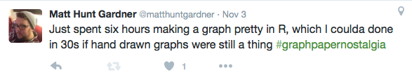

Part 1
Getting Started
Introduction
These instructions are not intended to be a comprehensive overview of R’s functionality, which is myriad. Instead it is a set of very specific instructions for doing the kinds of things in R that variationist sociolinguists familiar with Goldvarb often want to do. This includes extracting summary statistics from a standard token spreadsheet and formatting those statistics in such a way that they can be graphed using the package ggplot2, as well as testing the trends in those summary statistics using mixed-effects logistic regression analysis. These instructions assume you have installed the latest version of R (4.1.3 or later ). Even though this guide does not show everything that R can do, after reading and working your way through this guide, you should be familiar enough with how R generally works to figure out how do something not covered.
The best way to learn how to use R is to play with it. Learn by doing. You can’t break R. It doesn’t bite. Even though R is a cutting edge statistical tool, I compare the experience working with it to fixing an old car. Sometimes you just need to keep tinkering until the engine starts and runs smoothly. Other times you just need to kick it.
If you run into a problem you don’t know how to solve, Google it. I guarantee someone has had the same question already. There are many, many online R tutorials. That’s how I learned how to use R. That said, it still sometimes takes me many failed attempts before I get something right.
